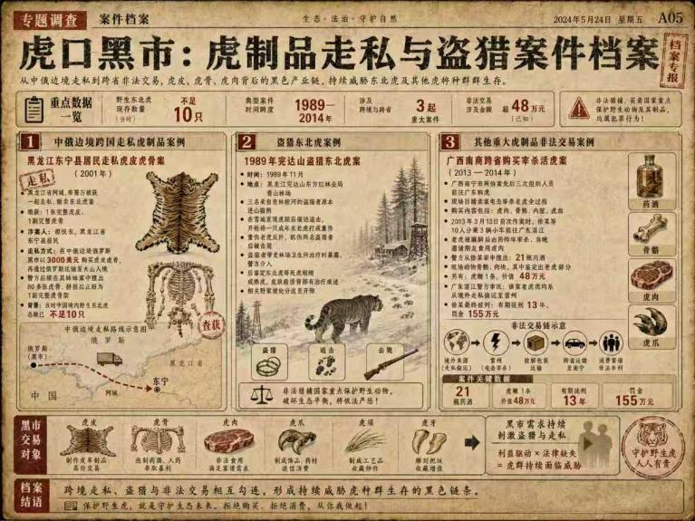
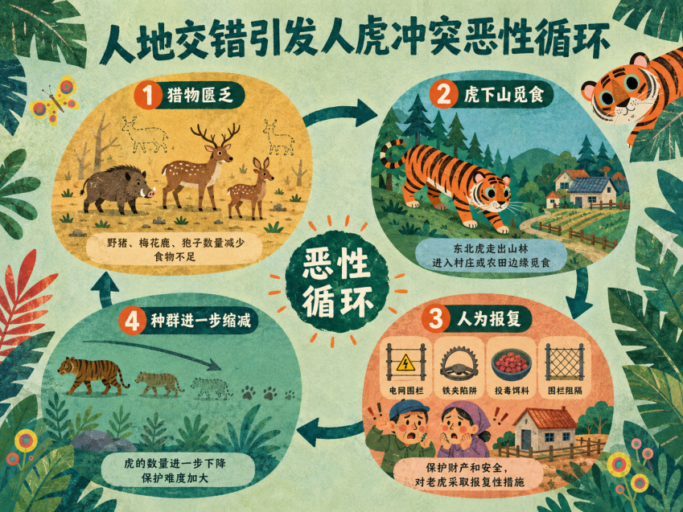
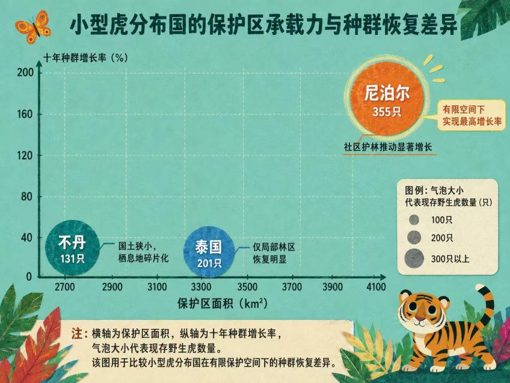
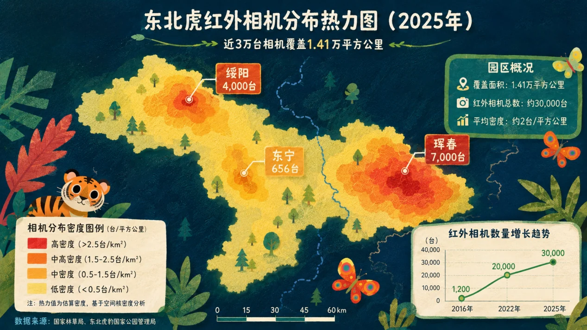

第 00 页 / 共 07 页
虎启
你知道现存共有多少只野生老虎吗？
0只全球野生老虎
人类说，一百年前全世界有近十万只我的同类纵横整片亚洲大陆；时至今日，全球野生老虎仅剩下约5574只。千万里连绵山林不断萎缩，我们的栖息地已经缩减至历史范围不足8%的破碎斑块。
作为亚洲森林旗舰物种、山林顶级掠食者，整个虎族群整体持续衰退。但在中国东北长白山林间，我们族群走出了一条逆势复苏之路。
0全球野生虎约数
0%仅存历史栖息地
种群回声
中国东北虎：27 → 70
巡护员常和我分享监测数据：2015年我国野生东北虎仅27只，2025年稳定增长至70只，十年种群涨幅2.6倍，保护成果超额完成全球老虎保护峰会设定恢复目标。
0→0中国十年种群变化
0倍十年增长
世界自然基金会全球总干事克思婷・斯海特评价：“这些复苏并非偶然，是各国政府、保护组织数十年持续投入的结果。”
身为一只常年穿梭边境山林的东北虎，我将以亲历视角，先讲述全球老虎共同的生存危机，拆解百年衰败深层根源，横向对比全球13个虎分布国种群恢复数据，在对照中凸显中国独特护虎成效，完整拆解我国化解所有生存难题的整套方案，最后书写虎啸重归山林的长远希望。
第一章

全球野生老虎零散分布在13个主权国家，各国地理、人口、开发强度不同，虎群生存境遇天差地别，整体危机共性突出。

点击地图光点或国家按钮查看完整保护信息；点击地图本身可放大。
全球危机切面
全球图景中的中国坐标
全球范围内，多数国家本土虎种群持续萎缩、甚至彻底消亡：越南、老挝、柬埔寨境内野生虎已经完全消失；缅甸野外监测样本稀缺，全境预估仅存22只老虎；马来西亚马来虎、印尼苏门答腊虎被IUCN划定为极危物种，马来虎或将在20年内野外灭绝；孟加拉国红树林虎虽小幅回升，但数量远不及2004年440只的历史峰值。
仅有六国实现老虎种群小幅增长，分别为中国、俄罗斯、印度、尼泊尔、泰国、不丹，但各国复苏背后均伴随难以调和的配套矛盾。
即便同为增长国，生存压力截然不同：印度老虎总量全球第一，拥有3682只野生虎，可2025年全年记录166只老虎非正常死亡，超三成虎游荡在村庄农田，人虎伤亡事故连年暴涨；俄罗斯远东东北虎总量达到750只，依托广袤无人原始林实现增长，但跨境盗猎、走私链条始终无法根除；尼泊尔、不丹、泰国种群小幅上涨，却受国土面积限制，难以承载大规模虎群繁衍。

反观中国，上世纪90年代末境内野生东北虎不足20只，近乎区域性功能性灭绝，林地破碎、人地高度交错、修复基础远弱于俄印，却在十年间实现种群2.6倍的大幅增长，在全球衰退大背景下形成鲜明反差。
第二章

回望百年岁月，我的族群数量一路断崖式跌落，一度徘徊在彻底消亡的边缘。追溯所有苦难的源头，皆源于人类长久以来对山林的侵扰与开发。层层梳理下来，压在我们身上的生存枷锁分为三重，每一道困境，都有长年山林监测记录、官方实地调研数据作为真切佐证。
1. 栖息地大面积丧失、持续破碎化
历史上我国东北适宜东北虎栖息的林地约40-50万平方公里，历经百年采伐开垦，适宜生存空间缩水80%，仅剩15-20万平方公里碎片化斑块。北师大2000-2020年长期野外监测显示，超50%虎栖息区域长期处于高强度人类干扰，公路、农田、人工林形成生态阻隔，阻断迁徙求偶通道，极易引发种群近亲衰退。
1998年天然林保护工程落地前，东北林区年均采伐量高达每平方公里117立方米，原生红松林锐减90%，猎物生存空间同步压缩。

2. 跨国盗猎与虎制品黑色产业链持续施压
TRAFFIC 2025全球野生物贸易报告显示，2000至2025年全球累计查获涉虎个体3808只，每月平均缴获涉案老虎9只。黑市单根完整虎骨售价可达20万元，虎皮、虎爪、虎肉存在稳定非法需求。
盗猎分子布设钢丝套、毒饵、高压电网，同时猎杀老虎与鹿、狍等猎物，双向摧毁食物链。上世纪90年代中俄边境盗猎泛滥，1998中美俄联合普查仅监测到12-16只野生东北虎，盗猎是当时族群濒临消失核心诱因。

冲突循环
3. 人地交错引发人虎冲突恶性循环
东北林区村落、耕地与野生栖息地高度穿插，农户散养黄牛挤占林间草料，野生有蹄类食物不足，迫使老虎下山捕食家畜，激化矛盾。保护体系完善前，村民会布设私网、毒药报复老虎，公路撞击、农田私拉电网每年造成虎意外伤亡。

这些因素共同压缩虎群的生存边界：栖息地被切碎，猎物数量下降，盗猎持续消耗，人与虎的相遇频次被迫升高，最终形成“山林越碎、冲突越多、报复越强、种群越弱”的恶性闭环。
第三章

全球现存13个老虎栖息国度，各自坐拥截然不同的山林基底、人口格局，在野生虎恢复之路上均深陷难以破解的固有困境。横向比对各国十年种群复苏现状，更能凸显我国在人地矛盾交织的破碎林地中摸索出的保护路径，具备独一无二的实践优势。
俄罗斯：难以复刻的先天短板
俄罗斯依托远东广袤原始无人林区开展东北虎保育，虽凭借大面积原生森林、全域禁猎政策实现种群十年涨幅74%，却天然存在难以复刻的先天短板。该国保护模式高度依赖人烟稀少的大片荒野，一旦落地至人口聚居、林地割裂区域便完全失效。

同时，边境管控存在漏洞，跨境盗猎团伙屡禁不绝，零散农田、村镇割裂迁徙廊道的问题长期悬而未决，始终找不到适配人地交错地带的综合治理手段。
印度：成功背后的冲突代价
印度采用分区划设保护区、事后经济补偿的保育思路，境内老虎存量为全球前列，却常年深陷人虎冲突恶性循环。过去十年种群增速仅24%，缓冲带人与虎活动空间高度重叠，缺乏前置预警、隔离管控体系，每年数百居民、上百只野生虎死于冲突。
2025年印度全国老虎死亡数：166只悬停或点击柱状分段查看原因占比
复苏困局对照
小型虎分布国：承载上限明显
尼泊尔、泰国、不丹等小型虎分布国，仅能依托国境边缘碎片化小片林地开展局部管控，依靠小型社区护林队伍实现种群小幅回暖，十年涨幅区间在30%—180%。但受国土面积硬性限制，保护区面积狭小、生态链条残缺，无法承载具备自我繁育、基因交流能力的大型稳定虎种群，种群规模极易受疫病、极端天气、人类开发冲击，长期存在种群衰退隐患。

放眼全球各国保育困境，中国面临的开局条件更为严苛：原生栖息地损毁严重、村镇农田与虎域高度交织、2015年初始野生东北虎种群仅27只，近乎区域性灭绝。但在多重劣势之下，我国东北虎十年种群涨幅达160%，增速大幅领先俄罗斯、印度等主要虎分布国；2025年更是达成园区本土东北虎伤人零记录，同步攻克栖息地破碎、野外盗猎、常态化人虎冲突三大全球性保育难题。
第四章
针对前文三大生存桎梏，2017年我国落地1.41万平方公里跨吉黑两省东北虎豹国家公园，搭建全链条闭环保护体系，针对性破解全球各国普遍难以平衡的多重矛盾。
1. 全域修复山林，重建完整食物链
修建跨公路、农田生态廊道，打通割裂林地；持续退耕还林、天然林保护，园区森林覆盖率达97.74%；实施“黄牛下山”工程，全面清退核心区散养牲畜；全域补饲繁育梅花鹿、野猪、狍子，猎物种群数量成倍上涨。

生态改善直接带动繁育能力提升：2023年园区记录8个稳定繁殖虎家族，全年新生幼崽20余只，幼崽存活率由开园30%提升至50%以上，族群年龄结构持续年轻化，破碎栖息地逐步恢复连通。
.png)
主动预警
2. 天空地智能预警，源头化解人虎矛盾
园区布设近3万台联网红外相机、26座通信基站、1564公里专用光缆，24小时实时回传虎活动影像，AI个体识别准确率超90%。一旦监测到老虎靠近村落、农田，分级预警同步推送村民与巡护人员，累计发布避险预警一万两千余次。

01 全域前端感知层29872台相机 · 26座基站 · 1564km光缆，全天采集影像和坐标。
02 高速数据传输层专用光缆与基站实时回传监测画面。
03 AI智能研判层数秒内识别个体与位置，准确率超过90%。
04 分级预警推送层风险发生前，向村民和巡护人员推送预警。
05 线下应急处置层村民避险、巡护管控，隔离人畜和虎活动区。
06 数据统计优化层汇总记录、调整点位，持续迭代AI模型。
不同于他国事后补救，这套前置防控体系从根源切断人虎冲突链条，实现全年无本土虎伤人事故。

第四章 · 长效支撑

3. 多维长效支撑，筑牢长久保护根基
科研层面：数千篇中外学术论文支撑管护决策，北师大长期监测成果为廊道规划、猎物补饲提供数据依据。

跨境协同层面：42%成年东北虎常年往返中俄，2024年两国签署跨境猫科保护协议，共建近1.7万平方公里跨国连片栖息地、联合实验室，协同打击跨境盗猎。


文化普及
文化普及层面：纪录片、影视、邮票、2025哈尔滨亚冬会吉祥物“滨滨、妮妮”让东北虎成为全民生态符号，全民护生意识持续提升。
 纪录片《众神之地》
纪录片《众神之地》纪录片、短视频与巡护影像让山林深处的东北虎被更多人看见，也让保护行动从专家议题进入大众视野。
 电影《东北虎》
电影《东北虎》从纪录片到剧情电影，我的形象不断进入银幕，成为人们理解东北、理解野生动物命运的文化符号。
 书画展览：“丹青绘虎豹 生态秀延边”
书画展览：“丹青绘虎豹 生态秀延边”书画展、绘本和自然教育把保护意识带进城市和校园，让更多人从审美与情感上接近山林。
 东北虎邮票与纪念币
东北虎邮票与纪念币1979年特种邮票、2022年国家公园纪念邮票和东北虎豹国家公园纪念币，让东北虎在方寸之间成为国家生态记忆。
 图书与绘本《东北虎的故事》
图书与绘本《东北虎的故事》从科学研究到儿童阅读，东北虎的故事进入更多人的童年，也让保护意识拥有更长久的回声。

点击任意泡泡，查看公众对东北虎的情感关键词
尾声

放眼全球五千余只野生虎，70只长白山林间的东北虎只是微小数字，但我们十年逆势复苏，交出了一套适配林地破碎、人地交错国情的东方生态答卷。
曾经家园四分五裂、盗猎横行、人虎矛盾无解；如今廊道贯通林海、猎物充盈山野、智能监测隔绝风险，年年都有幼虎跟随母虎踏雪巡山。无数巡护员、科研者扎根深山，跳出“护虎与民生对立”的固有困局，走出双向安稳共生之路。
悠长虎啸回荡长白山深处，这份依托完整系统治理实现的种群复苏经验，可为全球所有受栖息地破碎、人兽冲突困扰的国家提供可落地参考，让更多濒危虎群重获安稳栖身之地。
东北虎生存小游戏：穿过林海
游戏规则
野生东北虎寿命约15年，游戏中1年=3秒。小圆点中正向事件占51%，负向事件占49%。安全值或能量归零，挑战立即结束；否则持续到15岁“寿终正寝”。安全值和能量上限均为200。
键盘 ↑ ↓ ← → 或 WASD 控制移动。进入游戏后页面不会跟着方向键滚动。

猎物小猪能量 +22｜积分 +22

猎物小鹿能量 +22｜积分 +22

监测点安全 +20｜积分 +28

村庄安全 -22｜积分 -8

公路安全 -18｜能量 -8

盗猎陷阱安全 -32｜能量 -20
生存挑战结束
点击“开始游戏”进入独立全屏；使用方向键或 WASD 移动。